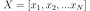
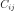
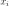
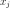
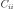

numpy.random.RandomState.multivariate_normal¶
method
-
RandomState.multivariate_normal(mean, cov, size=None, check_valid='warn', tol=1e-8)¶ Draw random samples from a multivariate normal distribution.
The multivariate normal, multinormal or Gaussian distribution is a generalization of the one-dimensional normal distribution to higher dimensions. Such a distribution is specified by its mean and covariance matrix. These parameters are analogous to the mean (average or “center”) and variance (standard deviation, or “width,” squared) of the one-dimensional normal distribution.
Note
New code should use the
multivariate_normalmethod of adefault_rng()instance instead; see random-quick-start.- Parameters
- mean1-D array_like, of length N
Mean of the N-dimensional distribution.
- cov2-D array_like, of shape (N, N)
Covariance matrix of the distribution. It must be symmetric and positive-semidefinite for proper sampling.
- sizeint or tuple of ints, optional
Given a shape of, for example,
(m,n,k),m*n*ksamples are generated, and packed in an m-by-n-by-k arrangement. Because each sample is N-dimensional, the output shape is(m,n,k,N). If no shape is specified, a single (N-D) sample is returned.- check_valid{ ‘warn’, ‘raise’, ‘ignore’ }, optional
Behavior when the covariance matrix is not positive semidefinite.
- tolfloat, optional
Tolerance when checking the singular values in covariance matrix. cov is cast to double before the check.
- Returns
- outndarray
The drawn samples, of shape size, if that was provided. If not, the shape is
(N,).In other words, each entry
out[i,j,...,:]is an N-dimensional value drawn from the distribution.
See also
Generator.multivariate_normalwhich should be used for new code.
Notes
The mean is a coordinate in N-dimensional space, which represents the location where samples are most likely to be generated. This is analogous to the peak of the bell curve for the one-dimensional or univariate normal distribution.
Covariance indicates the level to which two variables vary together. From the multivariate normal distribution, we draw N-dimensional samples, . The covariance matrix element  is the covariance of  and . The element  is the variance of (i.e. its “spread”).
Instead of specifying the full covariance matrix, popular approximations include:
Spherical covariance (cov is a multiple of the identity matrix)
Diagonal covariance (cov has non-negative elements, and only on the diagonal)
This geometrical property can be seen in two dimensions by plotting generated data-points:
>>> mean = [0, 0] >>> cov = [[1, 0], [0, 100]] # diagonal covariance
Diagonal covariance means that points are oriented along x or y-axis:
>>> import matplotlib.pyplot as plt >>> x, y = np.random.multivariate_normal(mean, cov, 5000).T >>> plt.plot(x, y, 'x') >>> plt.axis('equal') >>> plt.show()
Note that the covariance matrix must be positive semidefinite (a.k.a. nonnegative-definite). Otherwise, the behavior of this method is undefined and backwards compatibility is not guaranteed.
References
- 1
Papoulis, A., “Probability, Random Variables, and Stochastic Processes,” 3rd ed., New York: McGraw-Hill, 1991.
- 2
Duda, R. O., Hart, P. E., and Stork, D. G., “Pattern Classification,” 2nd ed., New York: Wiley, 2001.
Examples
>>> mean = (1, 2) >>> cov = [[1, 0], [0, 1]] >>> x = np.random.multivariate_normal(mean, cov, (3, 3)) >>> x.shape (3, 3, 2)
The following is probably true, given that 0.6 is roughly twice the standard deviation:
>>> list((x[0,0,:] - mean) < 0.6) [True, True] # random